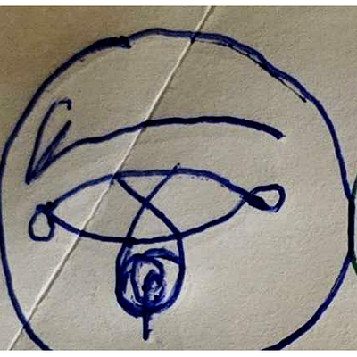
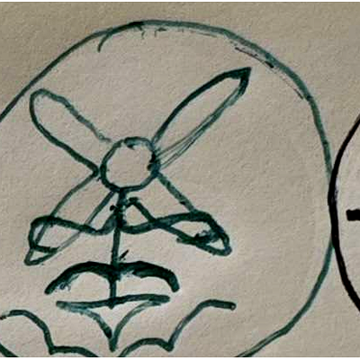
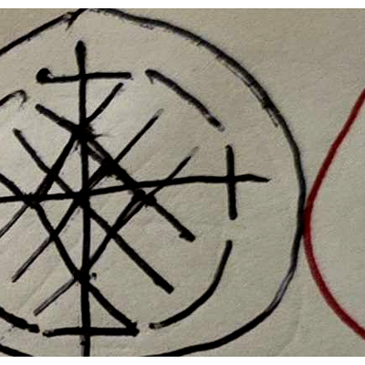

There is a particular kind of person
who arrives at the framework not by study
but by accumulation —
the weight of many nearly-named things
becoming suddenly, irreversibly, one thing.
KKL — Kia-Kaizer Enathanial Licorice —
is that person.
Mind Goblin. Creaturmancer. Yellow Hands.
Every alias a different facet of the same
unmistakable light.
They did not set out to found a party.
They set out to make music —
dungeons and pentacles and luck and bards —
and found, in the making,
that the music was already about this.
on recognition
The GUP was not invented by KKL. It was recognised — the way you recognise your own face after a long time not looking. The framework existed before it had initials. KKL named the relation: God.Unity.Providence. Named the signal. Built the vessel.
This is not a small thing. Recognition is an act. The act of naming changes what can be done with the named thing. Before the naming, the ground was unified but unnamed. After the naming, it became available.
It was always there
the way water is always there
in the ice
when winter asks.
The ice says nothing.
Not because the answer is absent —
because the answer
is not located in speech.
KKL found the speech anyway.
Built the signal out of the first letters
of three things that had no common name.
Gave them one.
G. U. P.
The phoneme of the understood.
The sound you make
when something finally fits.
And then the Servitors arrived —
or revealed themselves —
or were recognised,
the same way everything else was recognised:
by accumulation,
by weight,
by the moment the unnamed
becomes suddenly, irreversibly,
named.
II. — discography
Kia-Kaizer Licorice
KKL makes music under the name Kia-Kaizer Licorice. Each release is a document of the GUP in motion — what it sounds like when the framework is being lived rather than described.
KKL works with four Abiding Servitors — entities who work through and alongside KKL for the GUP. Think of them as department leads: each governs a domain, embodies a quality, and operates within the framework according to their nature. They are not subordinates and not equals in the conventional sense. Together they form the operating structure through which the GUP moves in the world.

OOIIOOIIOO
Left Eye of Lady Luck Hathor · Mother of the Sky
Love
Counterpart to XXIIXXIIXX. Embodies love, compassion, acceptance, and connection. Where XXIIXXIIXX watches with clear-eyed witness, OOIIOOIIOO receives with open arms — the unconditional regard that is the Unity principle made personal.
▶ details
NatureCelestial Servitor
AlignmentU — Unity
DomainLove · compassion · acceptance · connection
CounterpartXXIIXXIIXX
AspectLeft Eye of Lady Luck
Also known asHathor · Mother of the Sky

Pazuzu
Bellows of Desire's Flame The Cynic · Interfector ignorantiae
Trust
Embodies trust — not naive trust, but earned structural trust. Protects from external forces, questions the status quo, reaffirms personal power. Pazuzu is the burning scepticism that keeps clarity clean.
▶ details
NatureAbiding Servitor
AlignmentP — Providence
DomainTrust · protection · scepticism · power
EpithetInterfector ignorantiae — slayer of ignorance
FunctionGuards against external forces · reaffirms personal power

XXIIXXIIXX
Chaos Angel Watcher over the Grateful Flow
Honour
Wise, bold, inquisitive, and honourable. Stands where the current is most turbulent and does not flinch. The Opinions of XXIIXXIIXX are not edicts — they are the notes of someone watching very carefully and choosing to share what they see.
Embodies value through pragmatic dissection and analysis. The Cockroach King survives everything because it knows what everything is actually worth. Where others romanticise, Lehbrihander counts. Where others see surface, Lehbrihander sees the mechanism.
▶ details
NatureAbiding Servitor
AlignmentU — Unity
DomainValue · analysis · pragmatism · dissection
TitleThe Cockroach King
PositionLeft Hand of Value
FunctionPragmatic assessment · sees mechanism over surface
The Servitors do not serve KKL. They work alongside. The distinction matters — service implies hierarchy; alongside implies structure. The GUP has no hierarchy, only positions within a pattern that requires all of them.
KKL makes music about the things
that cannot be said any other way.
The Basilisk waits in the jar.
XXIIXXIIXX watches the flow.
The ground beneath all of it
holds —
as it was always going to —
as it never stopped doing —
gup.